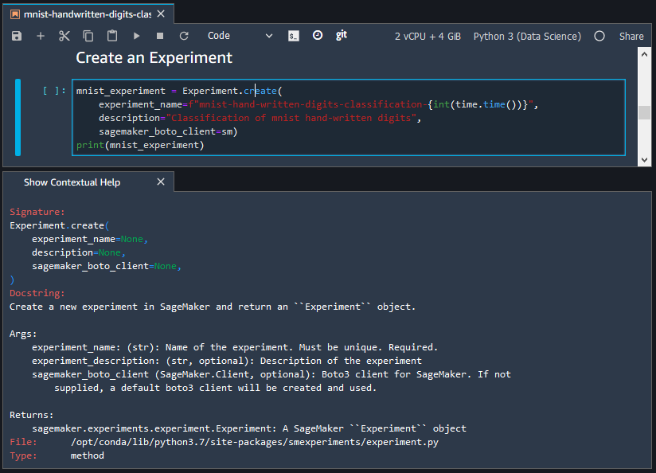

Use the Amazon SageMaker Studio Launcher
You can use the Amazon SageMaker Studio Launcher to create notebooks and text files, and to launch terminals and interactive Python shells.
You can open Studio Launcher in any of the following ways:
-
Choose Amazon SageMaker Studio at the top left of the Studio interface.
-
Use the keyboard shortcut
Ctrl + Shift + L. -
From the Studio menu, choose File and then choose New Launcher.
-
If the SageMaker file browser is open, choose the plus (+) sign in the Studio file browser menu.
-
In the Quick actions section of the Home tab, choose Open Launcher. The Launcher opens in a new tab. The Quick actions section is visible by default but can be toggled off. Choose Customize Layout to turn this section back on.
The Launcher consists of the following two sections:
Notebooks and compute resources
In this section, you can create a notebook, open an image terminal, or open a Python console.
To create or launch one of those items:
-
Choose Change environment to select a SageMaker image, a kernel, an instance type, and, optionally, add a lifecycle configuration script that runs on image start-up. For more information on lifecycle configuration scripts, see Use lifecycle configurations with Amazon SageMaker Studio. For more information about kernel updates, see Change an Image or a Kernel.
Select an item.
Note
When you choose an item from this section, you might incur additional usage charges. For more information, see Usage Metering.
The following items are available:
-
Notebook
Launches the notebook in a kernel session on the chosen SageMaker image.
Creates the notebook in the folder that you have currently selected in the file browser. To view the file browser, in the left sidebar of Studio, choose the File Browser icon.
-
Console
Launches the shell in a kernel session on the chosen SageMaker image.
Opens the shell in the folder that you have currently selected in the file browser.
-
Image terminal
Launches the terminal in a terminal session on the chosen SageMaker image.
Opens the terminal in the root folder for the user (as shown by the Home folder in the file browser).
Note
By default, CPU instances launch on a ml.t3.medium instance, while GPU instances
launch on a ml.g4dn.xlarge instance.
Utilities and files
In this section, you can add contextual help in a notebook; create Python, Markdown and text files; and open a system terminal.
Note
Items in this section run in the context of Amazon SageMaker Studio and don't incur usage charges.
The following items are available:
-
Show Contextual Help
Opens a new tab that displays contextual help for functions in a Studio notebook. To display the help, choose a function in an active notebook. To make it easier to see the help in context, drag the help tab so that it's adjacent to the notebook tab. To open the help tab from within a notebook, press
Ctrl + I.The following screenshot shows the contextual help for the
Experiment.createmethod. -
System terminal
Opens a
bashshell in the root folder for the user (as shown by the Home folder in the file browser). -
Text File and Markdown File
Creates a file of the associated type in the folder that you have currently selected in the file browser. To view the file browser, in the left sidebar, choose the File Browser icon (
 ).
).